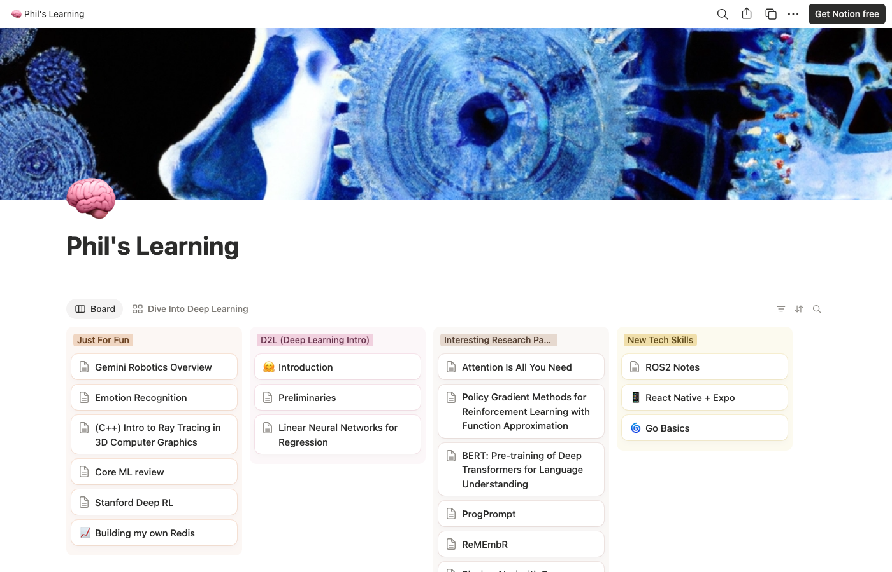

Since I was young, I've been drawn to documenting my learning journey — here's where I keep track of it.
A public Notion page where I keep running notes on whatever I'm currently digging into.

Open in Notion ↗An overview of a research paper covering the components of path planning — required inputs, different path-planning algorithms, and how robots are getting better at recognizing their environment.